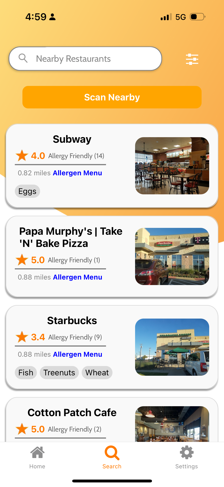
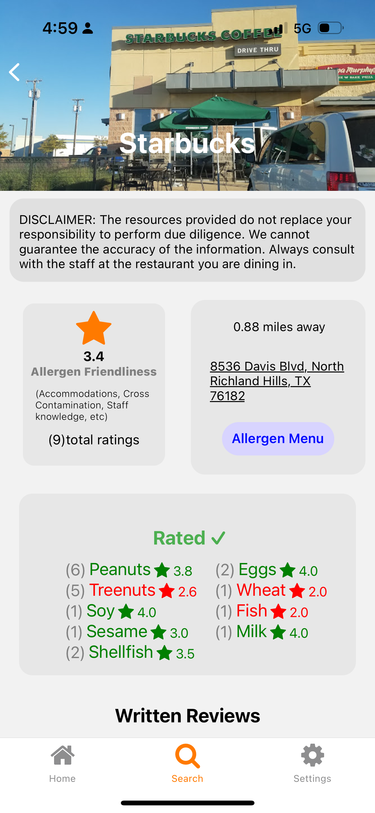
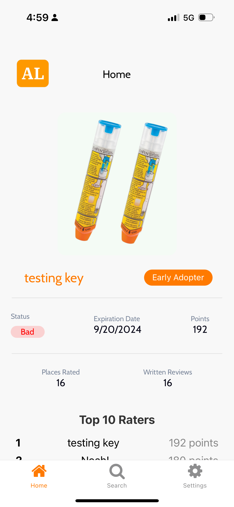

Allergen Life — Food Allergy Friendly Restaurant Finder
400
Unique Users
Unique Users
1.2M+
Places indexed
Places indexed
<1.5s
Search latency
Search latency
Problem
People with food allergies struggle to quickly verify where they can safely eat. Allergy menus are inconsistent, and reviews rarely specify allergens.
Target
The target was to create a mobile app that allows people with food allergies to quickly find restaurants that are safe for them.
Approach
- Allow people to search for restaurants by allergen and location.
- location-based queries with de-duplication between chains and local places.
- Lean mobile UI to filter by menu availability and safety score.
Results
- Developed a mobile app using React Native and Expo, integrating PostgreSQL for efficient geospatial queries.
App Screenshots


